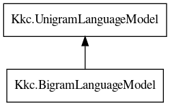

BigramLanguageModel
Object Hierarchy:

Description:
public interface BigramLanguageModel :
UnigramLanguageModel
All known implementing classes:
All known sub-interfaces:
Content:
Methods:
Inherited Members:
All known members inherited from interface Kkc.UnigramLanguageModel